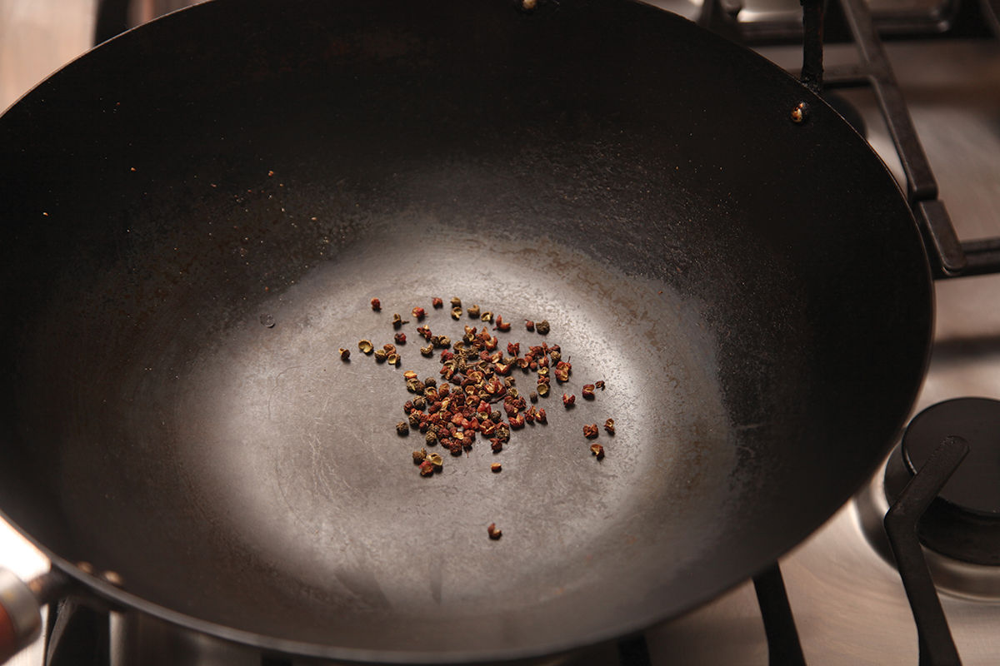
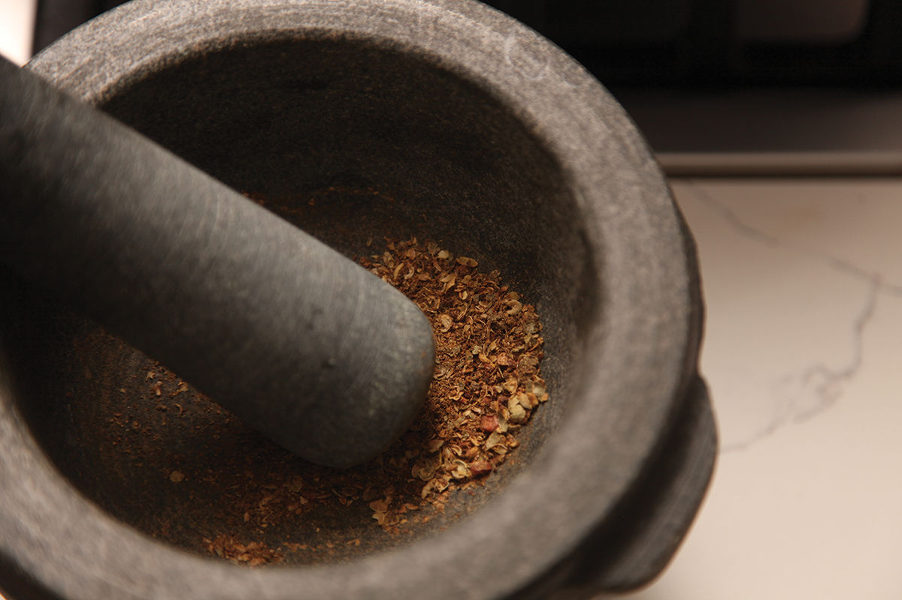
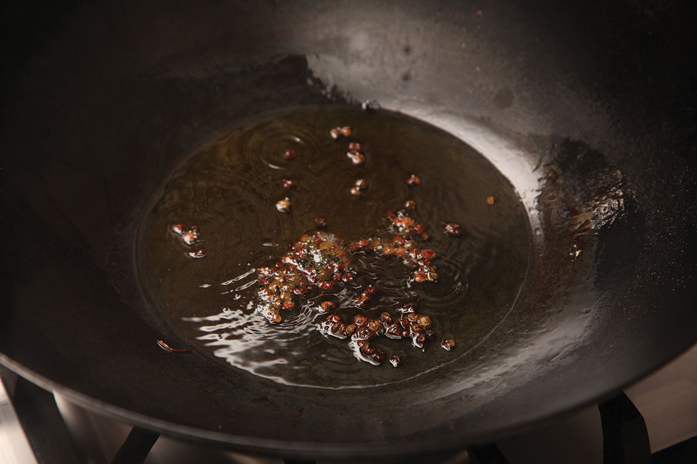
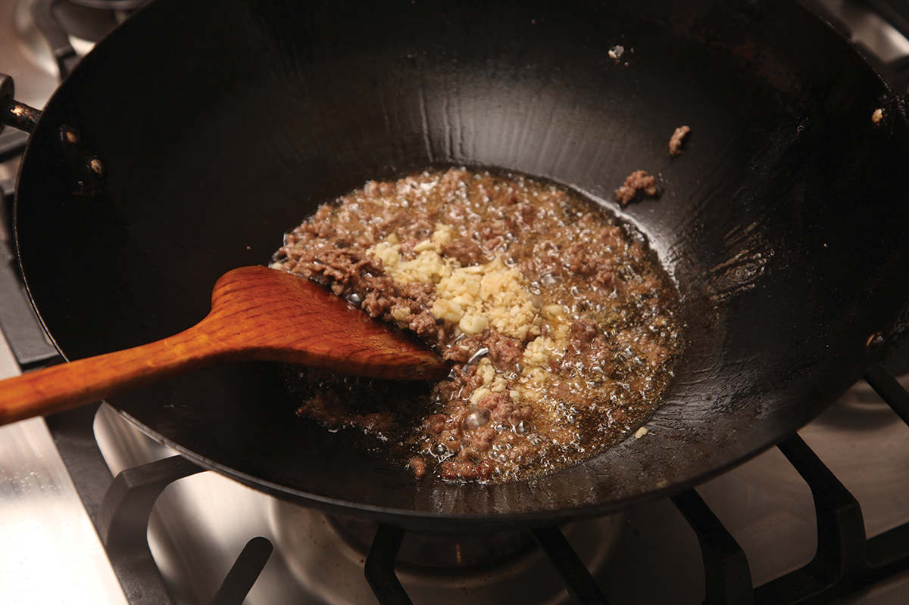
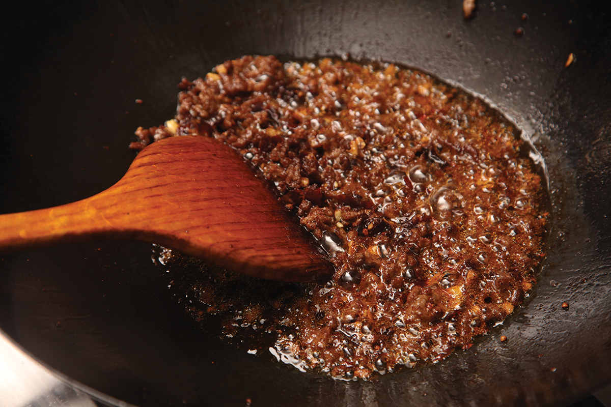
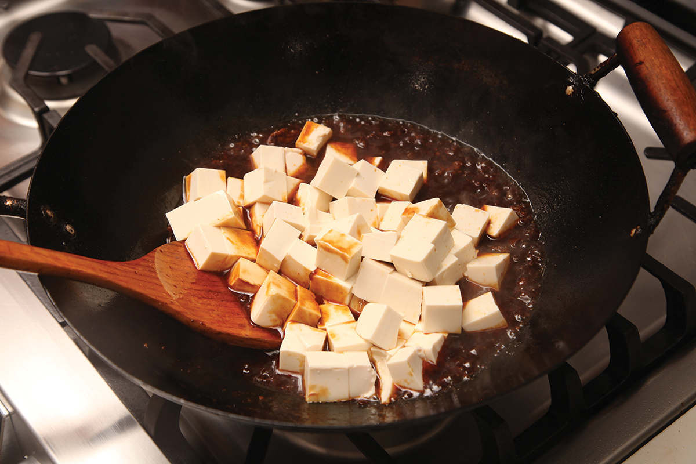
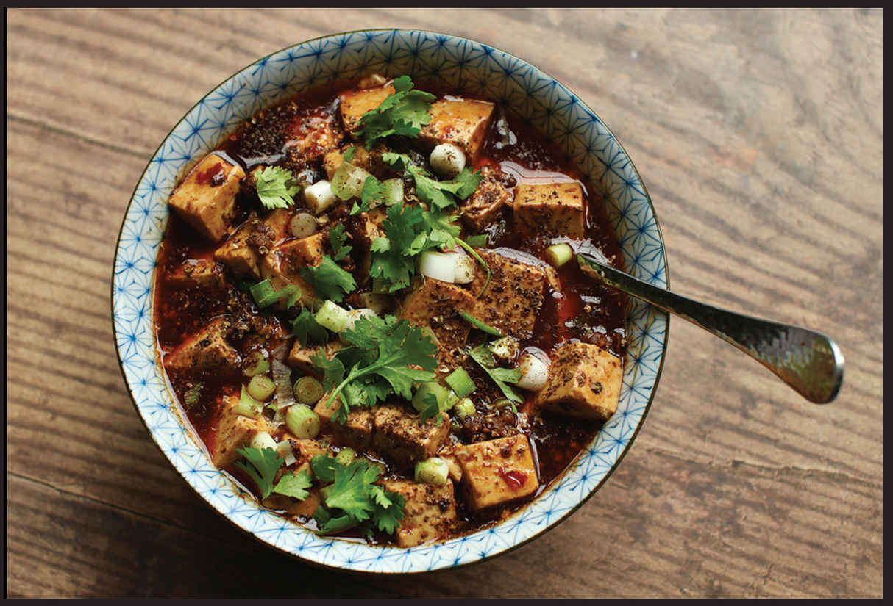

MAPO TOFU
|
Yield Serves 4 |
Active Time 20 minutes Total Time 20 minutes |
INGREDIENTS
1 tablespoon (8 g) red Sichuan peppercorns
2 tablespoons (30 ml) peanut, rice bran, or other neutral oil
1 teaspoon (3 g) cornstarch
1 tablespoon (15 ml) cold water
4 ounces (120 g) ground beef or pork
2 teaspoons (5 g) minced garlic (about 2 medium cloves)
2 teaspoons (5 g) minced fresh ginger (about ½-inch segment)
2 tablespoons (30 g) fermented chile bean paste (doubanjiang)
2 tablespoons (30 ml) Shaoxing wine
1 teaspoon (5 ml) dark soy sauce
2 teaspoons (10 ml) light soy sauce
¼ cup (60 ml) homemade or store-bought low-sodium chicken stock or water
1½ pounds medium to firm silken tofu, cut into ½-inch cubes
¼ cup (60 ml) homemade (here) or store-bought chile oil
3 scallions, sliced
Steamed rice, for serving
This is it. My favorite dish in the world and the grandmother of Sichuan cuisine. Translated literally as “pockmarked grandmother’s tofu,” its totally apocryphal origin story is identical to a half dozen other food origin stories: it starts with hungry crowds and a cook with few ingredients but plenty of creativity. The result is an inexpensive stew that uses simple ingredients—soft tofu, ground meat (traditionally beef, but frequently pork), fermented chile bean paste, a handful of Sichuan peppercorns, and plenty of red-hot chile oil—to create simple, soul-satisfying fare.
I grew up on the sweet-and-salty, heavy-on-the-beef version of mapo tofu that my mom used to make for us (see here). When paired with her handmade beef dumplings, it was far and away my favorite meal. Since then, I’ve had mapo tofu everywhere from Chinese takeout joints in Manhattan to directly from the source in Chengdu.
I very rarely get visibly excited about anything—I’m not sure if that makes me a stoic or an emotionless shell of a human being—but as we sat down at Chen Mapo Doufu, the upscale Chengdu institution that was supposedly built on the fame and recipe of Grandma Chen herself, I got a little giddy.
You can find mapo tofu on the menu at almost any restaurant in China, especially in Sichuan, but this version, served in a screaming-hot cast iron bowl, was easily my favorite. Tender cubes of soft tofu laced with tender ground beef under a bubbling layer of chile oil, fragrant with toasted Sichuan peppercorn and fermented horse beans. It didn’t have the blast of chile heat you might expect from looking at it. Rather, it has a more subtle, layered heat with chiles that come through alternately as sweet and hot with the rich, almost raisin-like flavor of dried fruit.
I’m happy to say that the best version I’ve had in the States, made by Zhang Wenxue, a Sichuan chef at Fuloon, in Malden, Massachusetts (I believe that it has since shuttered), is a near-perfect taste-alike to the one at Chen. I’m even happier to report that he was kind enough to share his techniques and recipe with me a few years back, and I’ve altered it very little over the years. The only thing I’ve changed is how I handle the tofu. Traditionally, the tofu is boiled in water briefly before being added to the stew. I’ve always heard this explained as “to remove the raw bean flavor.” Having tasted it side by side, I’ve never noticed any difference, so I personally skip the step, though I won’t hold it against you if you want to preboil your tofu.
There’s nothing difficult about the technique other than being careful once you’ve added the tofu not to break it up by stirring too vigorously. If you can toss with no utensils, do it (see “The Technique” on here). Otherwise, carefully slide a wok spatula under the tofu and turn it gently as you cook. Once you’ve got the ingredients prepared, the recipe takes all of 10 minutes at the stove.
DIRECTIONS
1 Heat half of the Sichuan peppercorns in a large wok over high heat until lightly smoking. Transfer to a mortar and pestle. Pound until finely ground and set aside.
2 Add the remaining Sichuan peppercorns and the oil to the wok. Heat over medium-high heat until lightly sizzling, about 1½ minutes. Remove the peppercorns with a spider and discard, leaving the oil in the pan.
3 Combine the cornstarch and cold water in a small bowl and mix with a fork until homogenous. Set aside.
4 Heat the oil left in the wok over high heat until smoking. Add the beef and cook, stirring constantly for 1 minute. Add the garlic and ginger and cook until fragrant, about 15 seconds. Add the chile bean paste and cook until the oil starts to turn red, about 30 seconds. Add the wine, soy sauce, and chicken stock and bring to a boil. Pour in the cornstarch mixture and cook for 30 seconds, until thickened. Add the tofu and carefully fold it in, being careful not to break it up too much. Fold in the chile oil and half of the scallions and simmer for 30 seconds longer. Transfer immediately to a serving bowl and sprinkle with the remaining scallions and the toasted ground Sichuan pepper. Serve immediately with steamed rice.






